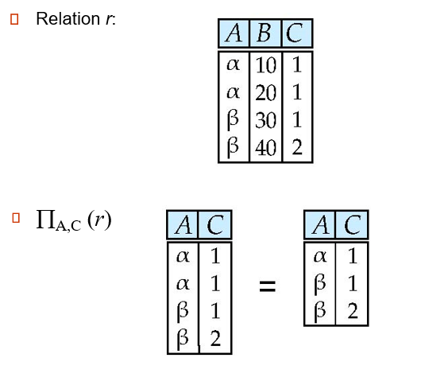
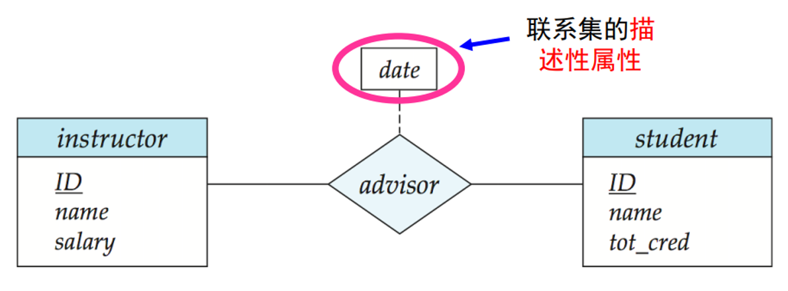

生活使年轻人的感情淡漠，而坟墓则冲淡老年人的感情。不要错怪这些无辜的孩子们。
# Introduction
数据库定义：
- 具有完整性和持久性的数据集合。[R. Ramakrishnan, J. Gehrhe]
- 长期（常常多年）存在的信息集合。 [Ullman]
- 长期存储在计算机内，有组织的，可共享的数据集合。[萨师煊，王珊]
数据库管理系统（DBMS）定义：
- 数据库 + 一组用以访问、更新和管理这些数据的程序
DBMS 的主要特性：
- 数据访问的高效和可扩展性（索引，查询优化）
- 缩短应用开发时间
- 数据独立性（物理数据独立性 / 逻辑数据独立性）
- 数据完整性和安全性
- 并发访问和鲁棒性（故障恢复）
DBMS 发展历史：
- File processing system (1950s-1960s)
- Network and hierarchical (1960s-1970s)
- Relational database systems
- 面向对象数据库系统：Object-oriented database system
- 对象关系数据库系统：Object-relational database systems
- 面向应用数据库系统：Application-oriented database systems
- 数据仓库 (Data Warehousing)、联机分析处理 (Online Analytical Processing )、数据挖掘 ( Data Mining )
模式（Schema）：数据库的总体设计
实例（Instance）：特定时刻存储在数据库中的信息的集合
数据库设计步骤：
- 需求分析
- 概念数据库设计：使用 E-R 模型或类似的高层次数据模型，描述数据
- 逻辑数据库设计：将概念设计转换为某个 DBMS 所支持的数据模型
- 结构优化：关系标准化，检查冗余和相关的异常关系结构
- 物理数据库设计：索引，集群和数据库调优
- 创建并初始化数据库 & 安全设计
数据库语言（SQL=DDL+DML+DCL——：
- Data Definition Language（DDL，数据定义语言）
- Data Manipulation Language（DML，数据操纵语言）
- Data Control Language（DCL，数据控制语言）
# Intro to Relational Model
Example of a Relation:
The set of allowed values for each attribute is called the domain of the attribute.
Attribute values are (normally) required to be atomic. that is, indivisible.
The special value null is a member of every domain
# Relation Schema and Instance
-
are attributes.
-
is a relation schema.
e.g. instructor=(ID, name, dept_name, salary)
-
Formally, given sets , a relation is a subset of .
Thus, a relation is a set of n-tuples where each .
-
The current values (relation instance) of a relation are specified by a table
-
An element t of relation r is a tuple, represented by a row in a table
Notice: relations are unordered, and order of tuples is irrelevant.
# Keys
Let , where is a relation schema.
is a superkey of if values for are sufficient to identify a unique tuple of each possible relation .
- e.g. ID and {ID, name} are both superkeys of instructor.
Superkey is a candidate key if is minimal.
- e.g. ID is a candidate key for instructor.
Foreign key: A relation, say , may include among its attributes the primary key of another relation, say . This attribute is called a foreign key from , referencing .
- is called the referencing relation.
- is called the referenced relation.
# Relational Query Languages
“Pure” languages:
- Relational algebra
- Tuple relational calculus
- Domain relational calculus
The above 3 pure languages are equivalent in computing power
# Relational algebra
- selection of rows
-
selection of columns

-
union of two relations
-
Set difference of two relations
-
Set intersection of two relations
-
Cartesian-product
Allows us to refer to a relation, (say ) by more than one name. indicates the expression under the name . Thus, is legal.
-
Natural Join
# Tuple Relational Calculus
就是集合语言，譬如
# Introduction to SQL
The SQL data-definition language (DDL) allows the specification of information about relations, including:
- The schema for each relation.
- The domain of values associated with each attribute.
- Integrity constraints.
- And as we will see later, also other information such as
- The set of indices to be maintained for each relations.
- Security and authorization information for each relation.
- The physical storage structure of each relation on disk.
# Domain Types in SQL
-
char(n). Fixed length character string, with user-specified length n.
-
varchar(n). Variable length character strings, with user-specified maximum length n.
-
int. Integer (a finite subset of the integers that is machine-dependent).
-
smallint**.** Small integer (a machine-dependent subset of the integer domain type).
-
numeric(p,d). Fixed point number, with user-specified precision of p digits, with d digits to the right of decimal point. (ex., numeric(3,1), allows 44.5 to be stores exactly, but not 444.5 or 0.32)
-
real, double precision. Floating point and double-precision floating point numbers, with machine-dependent precision.
-
float(n). Floating point number, with user-specified precision of at least n digits.
# Example sentence
1 | create table instructor( |
Integrity Constraints:
- not null,
- primary key,
- foreign key
primary key declaration on an attribute automatically ensures not null.
1 | insert into instructor values('10211', 'Smith', 'Biology', '66000'); |
1 | (select course_id from section where sem = 'Fall' and year = 2009) |
Any comparison with null returns unknown.
- unknown or true = true
- unknown and false = false
1 | /* erroneous query */ |
1 | # > some |
1 | # with |
1 | delete from instructor |
# Intermediate SQL
# Join Expression
Join types: inner join, left outer join, right outer join, full outer join
Join conditions: natural, on (predicate), using (A1, …, An)
-
natural left outer join:
-
natural right outer join:
-
natural full outer join:
-
inner join:
-
with/without natural:
-
using:
总结下：
inner/outer 的区别是：inner 直接舍弃一行，而 outer 会用 null 补齐缺失的 attributes。
left/right/full 区别是：依据哪个表来确定某一行是否应该存在
有无 natural：是否自动识别相同的 attribute 给合并了
# Views
In some cases, it is not desirable for all users to see the entire logical model (that is, all the actual relations stored in the database.)
Consider a person who needs to know an instructor’s name and department, but not the salary. This person should see a relation described, in SQL, by：
1 | select ID, name, dept_name from instructor |
A view provides a mechanism to hide certain data from the view of certain users. Any relation that is not of the conceptual model but is made visible to a user as a “virtual relation” is called a view.
a view definition causes the saving of an expression; the expression is substituted into queries using the view.
这里我的理解就是，一个 view 本质上就是一条查询的语句。含义是，我赋予用户 A 查询某些字段的能力，但我又不想让他可以观测到整张表，那我就允许他有一个 “窗口”（view），透过这个窗口可以窥探到表的某些内容。每次 A 想查看时，就相当于执行这条查询语句然后返回他想要的内容。但他只能获得这条查询语句能获得的信息。
所以每次查看 view 时，都相当于直接查询表。那么 create 一个 view 并不是获得了表的一个复制，而只是保存了查询语句。所以表中的内容修改时，view 的内容也会修改（create view 并没有 copy，而是存下访问语句直接访问原表）。
因此 view 的更新修改会比较麻烦，因为用户 A 在只能看到几个字段的情况下，在试图修改原表。
一般地，如果定义视图的查询对下列条件都能满足，我们称 SQL 视图是可更新的（updatable），即视图上可以执行插入、更新或删除。
- from 子句中只有一个数据库关系
- select 子句中只包含关系的属性名，不包含任何表达式、聚集或 distinct 声明
- 任何没有出现在 select 子句中的属性可以取空值；即这些属性上没有 not null 约束，也不构成主码的一部分
- 查询中不含有 group by 或 having 子句
此时对 view 的更新，就会往原表里添加一行数据。没有提到的字段用 null 填充。当然，也有物化视图（Materialized Views）的概念，可以把一个 view 转化成一个表存储在数据库中。此时它就与原表没有关系了而成为一个独立的表。
# Transactions
事务（transaction）由查询和更新语句的序列组成。 SQL 标准规定当一条 SQL 语句被执行，就隐式地开始了一个事务。下列 SQL 语句之一会结束一个事务:
- Commit work：提交当前事务，也就是将该事务所做的更新在数据库中持久保存。在事务被提交后，一个新的事务自动开始
- Rollback work：回滚当前事务，即撤销该事务中所有 SQL 语句对数据库的更新。这样，数据库就恢复到执行该事务第一条语句之前的状态
事务的四个性质：
- 原子性（atomic）
- 一致性 (consistency)
- 隔离性 (isolation)
- 持久性 (durability)
# Integrity Constraints
数据库完整性（DB Integrity）是指 DBMS 应保证 DB 的一种特性 —— 在任何情况下的正确性、有效性和一致性。
- 广义完整性：语义完整性、并发控制、安全控制、DB 故障恢复等
- 狭义完整性：专指语义完整性，DBMS 通常有专门的完整性管理机制与程序来处理语义完整性问题
DBMS 允许用户自定义一些完整性约束规则（用 SQL-DDL 来定义）然后有 DB 更新操作时，DBMS 会进行完整性约束检查。
完整性约束保证授权用户对数据库所做的修改不会破坏数据的一致性，譬如：
- 教师姓名不能为 null
- 任意两位教师不能有相同的教师标识
- course 关系中的每个系名必须在 department 关系中有一个对应的系名
- 一个系的预算必须大于 0.00 美元
域完整性、实体完整性（主键的约束）、参照完整性（外键的约束）和用户定义的完整性约束。完整性约束是数据库实例 (Instance) 必须遵循的，由 DBMS 维护。
-
Integrity Constraints on a Single Relation： primary key, not null, unique, check § e.g.
Integrity 1
2
3
4
5
6
7
8
9
10
11
12create table section (
course_id varchar (8) not null,
sec_id varchar (8),
semester varchar (6),
year numeric (4,0),
building varchar (15),
room_number varchar (7),
time slot id varchar (4),
unique (course_id),
primary key (course_id, sec_id, semester, year),
check (semester in (’Fall’, ’Winter’, ’Spring’, ’Summer’))
); -
Referential Integrity: foreign key e.g.
1
2
3
4
5
6
7
8
9create table course (
...
dept_name varchar(20),
foreign key (dept_name) references department
on delete cascade
on update cascade,
...
);
# SQL Data Types and Schemas
Built-in types:
-
date: Dates, containing a (4 digit) year, month and date
- Example: date ‘2005-7-27’
-
time: Time of day, in hours, minutes and seconds.
- Example: time ‘09:00:30’ time ‘09:00:30.75’
-
timestamp: date plus time of day
- Example: timestamp ‘2005-7-27 09:00:30.75’
-
interval: period of time
- Example: interval ‘1’ day
Index Creation
1 | create table student( |
Indices are data structures used to speed up access to records with specified values for index attributes
Create type construct in SQL creates user-defined type:
1 | create type Dollars as numeric (12,2) final # final is meaningless but a key word |
Create domain construct in SQL-92 creates user-defined domain types:
1 | create domain person_name char(20) not null |
# Authorization
Forms of authorization on parts of the database:
- Read - allows reading, but not modification of data.
- Insert - allows insertion of new data, but not modification of existing data.
- Update - allows modification, but not deletion of data.
- Delete - allows deletion of data.
Forms of authorization to modify the database schema
- Index - allows creation and deletion of indices.
- Resources - allows creation of new relations.
- Alteration - allows addition or deletion of attributes in a relation.
- Drop - allows deletion of relations.
Grant-to sentence:
1 | grant <select/insert/update/delete/all privileges> |
Revoke-from sentence:
1 | revoke <select/insert/update/delete/all privileges> |
Create role: 角色，一个角色对应了一些权利
1 | create role instructor; |
# Advanced SQL
# Triggers
A trigger is a statement that is executed automatically by the system as a side effect of a modification to the database.
To design a trigger mechanism, we must:
- Specify the conditions under which the trigger is to be executed.
- Specify the actions to be taken when the trigger executes.
1 | create trigger timeslot_check1 after insert on section |
相当于一个监听函数，就是表发生变化时，就会触发。
1 | create trigger XXX <before/after> <update/insert/delete> on XXX。 |
- referencing old row as: for deletes and updates
- referencing new row as: for inserts and updates
# Entity-Relationship Model
# Design Process
# Outline of the ER Model
A database can be modeled as:
- a collection of entities
- relationship among entities.
An entity is an object that exists and is distinguishable from other objects. e.g. specific person, company, event, plant
Entities have attributes. e.g. people have names and addresses
An entity set is a set of entities of the same type that share the same properties. e.g. set of all persons, companies, trees, holidays
A relationship is an association among several entities.
A relationship set is a mathematical relation among entities, each taken from entity sets.
e.g.
An attribute can also be property of a relationship set.
For instance, the advisor relationship set between entity sets instructor and student may have the attribute date which tracks when the student started being associated with the advisor：
# Mapping Cardinality Constraints
For a binary relationship set the mapping cardinality must be one of the following types:
- One to One
- Many to One
- One to Many
- Many to Many
The combination of primary keys of the participating entity sets forms a super key of a relationship set.
- e.g. is a super key of advisor.
Must consider the mapping cardinality （映射基数） of the relationship set when deciding what are the candidate keys
Need to consider semantics of relationship set in selecting the primary key in case of more than one candidate key
Example: Suppose we have entity sets instructor, with attributes including dept_name and department. And we have a relationship inst_dept relating instructor and department. Then attribute dept_name in entity instructor is redundant since there is an explicit relationship inst_dept which relates instructors to departments.
# E-R Diagrams

We express cardinality constraints by drawing either a directed line (), signifying “one,” or an undirected line (—), signifying “many,” between the relationship set and the entity set.
全参与（用双线表示）：实体集中每个 entity 都参与了关系。譬如每个学生都有一个导师，那么实体集 student 全参与关系 advisor。
部分参与（单线）：非全参与的情况。
可以在线上写下 a…b 表示实体集中参与关系的 entity 数量的范围：
弱实体集：不具有主键的实体集。他的存在依赖于它的标识实体集。
标识性联系：将弱实体集与其标识实体集联系在一起。
注：这里我的理解是，section 没有 primary key，或者说，它的 primary key 就是 (sec_id, semester, year) 全体 attributes。那么 sec_course 就负责联系起 course 和 section。譬如 sec_course(course_id, sec_id, semester, year)。
一个完整的设计 ER 图例子：
# Reduction to Relational Schemas
Entity sets and relationship sets can be expressed uniformly as relation schemas that represent the contents of the database.
A database which conforms to an E-R diagram can be represented by a collection of schemas.
For each entity set and relationship set there is a unique schema that is assigned the name of the corresponding entity set or relationship set.
Each schema has a number of columns (generally corresponding to attributes), which have unique names.
A strong entity set reduces to a schema with the same attributes. e.g. student(ID, name, tot_cred).
A weak entity set becomes a table that includes a column for the primary key of the identifying strong entity set. e.g. section (course_id, sec_id, sem, year).
对应于上面 ER 图的 Schema Diagram：
# Summary of Symbols Used in E-R Notation
# Relational Database Design
# Normal Form
数据冗余问题：
我们希望利用模式分解，将关系模式分解为
- instructor(ID, name, dept_name, salary)
- department(dept_name, building, budget)
而无损连接分解即是要求，分解后可以重新 natural join 回来：
而 Normal Form 的目的就是判断一个关系模式 是否是 “好的”（不冗余的）。
Functional Dependencies: 就是不同的 一定对应不同的 的话，就说 函数依赖于：
| a | f |
| b | h |
| a | f |
| c | f |
那么显然， 是关系模式 的 super key 当且仅当。其中 表示函数决定，即 函数依赖于。
Armstrong 公理：
- 若，那么（自反律）
- 若，那么（增补率）
- 若 且，那么（传递率）
# Decomposition
分解应有的特性：
- 原模式 的所有属性都必须出现在分解后的 中：。
- 无损连接分解。
- 保持依赖。
- 无冗余（满足 BCNF，3NF）
例：譬如，。那么若把 分解为 的话，那么 上的函数依赖只有， 上的函数依赖只有。此时就不保持依赖，因为把 上的依赖合起来，也推不出原有函数依赖。
这也说明了，检查一个分解是否保持依赖时，需要考虑的是 中每个函数依赖是否被保持了。即 三个函数依赖。
# Boyce-Codd Normal Form
对于一个关系模式 和它上面的函数依赖，他们是 Boyce-Codd Normal Form（BCNF）当且仅当对（即所有可推导出的函数依赖闭包）中的所有依赖，下列至少一个成立：
- ，即为平凡函数依赖。
- ，即 是 super key。
计算 BCNF 的算法为：
1 | result := {R}; |
我们并不总能满足无损连接、BCNF、保持依赖三个设计目标。因此，我们可以设计一个较弱的范式：
# Third Normal Form
关系模式 属于第三范式（3NF）当且仅当对 中所有的函数依赖，下列至少一个成立：
- ，即它是一个平凡依赖。
- ，即 是 super key。
- 中的每个 attribute 都包含于 中的一个 candidate key。
3NF 是会导致冗余的产生，而且检查一个分解是否是 3NF 是 NP-hard 的，但是可以在多项式时间内分解！
1 | i := 0; |
例：考虑关系模式，和函数依赖：
首先计算正则覆盖，去除多余函数依赖和闭包：
然后第一个 for 循环得到分解。然后很显然 已经包含了 candidate key，所以到此停止。而 已经被包含于其他模式，所以被删除。故最后分解为 和。
总是可以把一个关系分解为 3NF 且无损和保持依赖。
总是可以把一个关系分解为 BCNF 且分解是无损的。
例题：
# Indexing and Hashing
索引是定义在存储表基础之上，有助于无需检查所有记录而快速定位所需记录的一种辅助存储结构，由一系列存储在磁盘上的索引项（index entries）组成，每一索引项由两部分组成：
- 索引字段
- 行指针
稠密也可以分为稠密索引和稀疏索引。通过索引可以快速访问表内容。
B + 树示例：
每个索引块都由 个索引值和 个指针组成。
譬如索引块 23，31，43 那个，指针就指向了介于 23 和 31 之间的索引块。理解一下！@#&！@……
# Transaction Management
A transaction is a unit of program execution that accesses and possibly updates various data items. To preserve the integrity of data the database system must ensure:
-
Atomicity. Either all operations of the transaction are properly reflected in the database or none are.
-
Consistency. Execution of a transaction in isolation preserves the consistency of the database.
-
Isolation. Although multiple transactions may execute concurrently, each transaction must be unaware of other concurrently executing transactions. Intermediate transaction results must be hidden from other concurrently executed transactions.
-
Durability. After a transaction completes successfully, the changes it has made to the database persist, even if there are system failures.
Transaction state:
-
Active – the initial state; the transaction stays in this state while it is executing
-
Partially committed – after the final statement has been executed.
-
Failed – after the discovery that normal execution can no longer proceed.
-
Aborted – after the transaction has been rolled back and the database restored to its state prior to the start of the transaction. Two options after it has been aborted:
-
restart the transaction
-
kill the transaction
-
-
Committed – after successful completion.